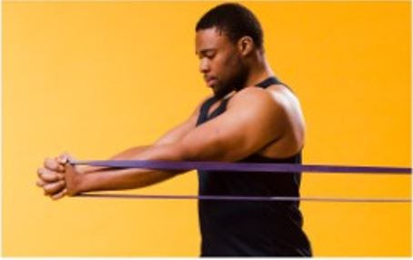

SPORT
¡Bienvenidos a nuestro blog! Hoy, queremos compartir contigo la increíble transformación que puedes experimentar a través del deporte con nuestro servicio de coaching y entrenamiento. El deporte es una herramienta poderosa para mejorar tu salud cardiovascular. Fortalece el corazón y mejora su circulación, lo que ayuda a disminuir el riesgo de enfermedades del corazón. Pero eso no es todo, también juega un papel importante en el control del peso y previene la obesidad. Nuestros entrenadores pueden ayudarte a establecer metas de peso saludables y a desarrollar un plan de ejercicios y nutrición para alcanzarlas.Además, el deporte reduce el nivel de azúcar en la sangre y ayuda a que tu insulina funcione mejor. Esto puede reducir tu riesgo de síndrome metabólico y diabetes. Pero los beneficios del deporte no se limitan a la salud física. Durante el ejercicio, el cuerpo libera sustancias químicas que pueden ayudar a tener un mejor ánimo.
Durante el ejercicio, el cuerpo libera sustancias químicas que pueden ayudar a tener un mejor ánimo, a liberar tensiones acumuladas durante el día y a sentirnos más relajados. Es por eso que, nuestros entrenadores pueden enseñarte técnicas de mindfulness y relajación para mejorar aún más tu salud mental.
NEW TEACHERS

BODY PUMP
El Body Pump es un programa de entrenamiento físico que combina aeróbic con levantamiento de pesas. Se realiza en clases colectivas al ritmo de la música, trabajando un grupo muscular diferente en cada canción. Su objetivo es aumentar la masa muscular y quemar calorías, resultando en una pérdida de grasa corporal.
IN HOME
Hacer ejercicio en casa tiene muchos beneficios. No solo te permite tener un mayor compromiso con tu rutina de ejercicios, ya que no tienes que salir de casa, sino que también te permite tener acceso a tus propios recursos y herramientas en cuestión de segundos. Además, el entorno tranquilo de tu hogar puede ayudarte a concentrarte más en tus movimientos, lo que es fundamental para realizar los ejercicios correctamente y sin lesionarte. Por último, hacer ejercicio en casa ofrece flexibilidad horaria, lo que facilita la incorporación del ejercicio en tu rutina diaria.

BODY COMBAT
El Body Combat es un programa de entrenamiento cardiovascular que combina movimientos de diversas artes marciales como el Taekwondo, Tai Chi, Capoeira, Muay Thai, Karate y boxeo. Se realiza en clases grupales al ritmo de la música, con el objetivo de mejorar la resistencia, quemar calorías y fortalecer los músculos.